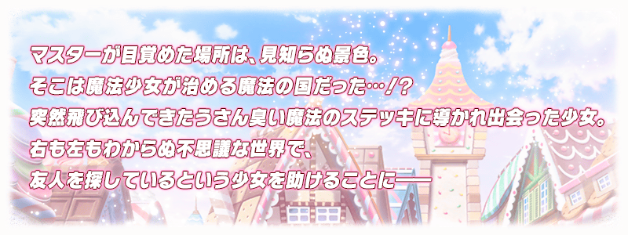

Master醒來的地方，是未曾見過的景色。
那裡是魔法少女治理的魔法國度…！？
受突然跳出來的可疑魔法之杖引導而相遇的少女。
在左看右看都是不可思議的世界，
幫助正在尋找朋友的少女ーー

◆活動舉辦時間◆
2016年9月中旬預定
◆活動概要◆
合作活動「魔法少女紀行 ～プリズマ・コーズ～」舉辦決定！
送上「Fate/kaleid liner 魔法少女☆伊莉雅!!」的原作者ひろやまひろし監修的原創故事，舉辦特別的活動！
◆活動參加條件◆
只有通過「特異點F 炎上汙染都市 冬木」的Master才能參加
在Fate/Grand Order官方網站內的首頁及展覽室，公開合作活動的TVCM。敬請確認。
「魔法少女紀行～プリズマ・コーズ～」是女性Servant活躍的活動。
女性Servant裝備時會賦予對活動攻略有利效果的活動限定概念禮裝登場。
- 【活動限定概念禮裝装備時賦予效果的Servant】
-
職階 稀有度 Servant Saber ★★★★★ 阿爾托莉亞・潘德拉剛 ★★★★★ 阿提拉 ★★★★★ 沖田總司 ★★★★★ 莫德雷德 ★★★★★ 尼祿・克勞狄烏斯〔Bride〕 ★★★★★ 兩儀式 ★★★★ 阿爾托莉亞・潘德拉剛〔Alter〕 ★★★★ 阿爾托莉亞・潘德拉剛〔Lily〕 ★★★★ 尼祿・克勞狄烏斯 ★★★★ 夏爾・德翁 Archer ★★★★★ 阿爾托莉亞・潘德拉剛 ★★★★ 阿塔蘭塔 ★★★★ 織田信長 ★★★★ 安妮・伯妮＆瑪莉・瑞德 ★★★ 尤瑞艾莉 Lancer ★★★★★ 斯卡哈 ★★★★★ 布倫希爾德 ★★★★★ 阿爾托莉亞・潘德拉剛 ★★★★★ 玉藻前 ★★★★ 伊莉莎白・巴托里 ★★★★ 阿爾托莉亞・潘德拉剛〔Alter〕 ★★★★ 清姬 Rider ★★★★★ 弗朗西斯・德雷克 ★★★★★ 女王梅芙 ★★★★ 瑪莉・安東尼 ★★★★ 瑪爾大 ★★★★ 安妮・伯妮＆瑪莉・瑞德 ★★★★ 阿爾托莉亞・潘德拉剛〔聖誕Alter〕 ★★★★ 莫德雷德 ★★★★ 阿斯托爾福 ★★★ 美杜莎 ★★★ 布狄卡 ★★★ 牛若丸 Assassin ★★★★★ 開膛手傑克 ★★★★★ 謎之女主角X ★★★★★ 酒呑童子 ★★★★ 絲西娜 ★★★★ 卡米拉 ★★★★ 兩儀式 ★★★★ 斯卡哈 ★★★ 荊軻 ★★★ 百貌的哈桑 ★★★ 靜謐的哈桑 ★ 瑪塔・哈里 Caster ★★★★★ 玉藻前 ★★★★★ 玄奘三藏 ★★★★★ 李奧納多・達文西 ★★★★ 伊莉莎白・巴托里〔萬聖節〕 ★★★★ 美狄亞〔Lily〕 ★★★★ 童謠 ★★★★ 愛麗絲菲爾〔天之衣〕 ★★★★ 海倫娜・布拉瓦茨基 ★★★★ 尼托克里絲 ★★★★ 瑪莉・安東尼 ★★★ 美狄亞 Berserker ★★★★★ 南丁格爾 ★★★★★ 源頼光 ★★★★ 玉藻貓 ★★★★ 弗蘭肯斯坦 ★★★★ 茨木童子 ★★★ 清姬 Ruler ★★★★★ 貞德 ★★★★ 瑪爾大 Avenger ★★★★★ 貞德〔Alter〕 Shielder ★★★ 瑪琇・基利艾拉特
另外，對一部份的Servant，賦予對活動攻略有利的效果。
|
【賦予效果的Servant】 |
強化對象Servant，挑戰活動吧！